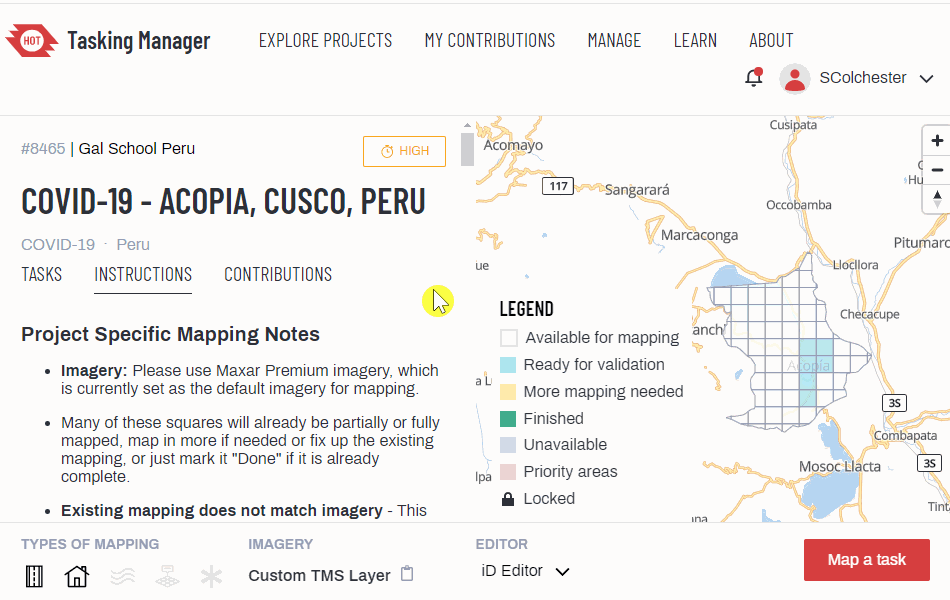
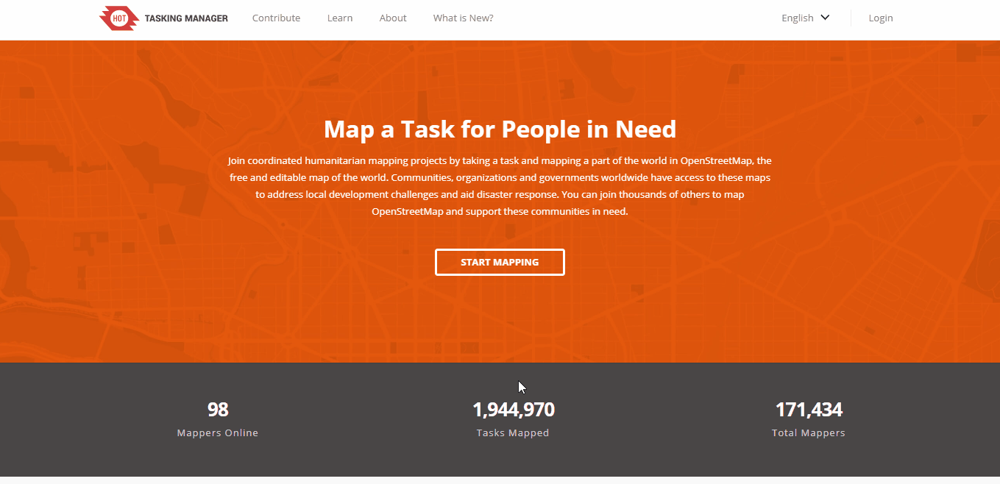
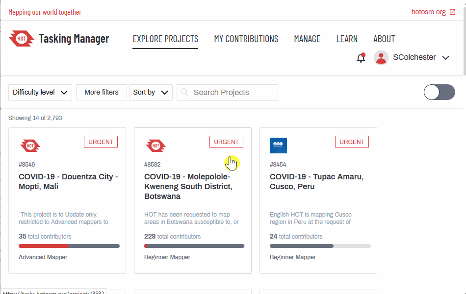
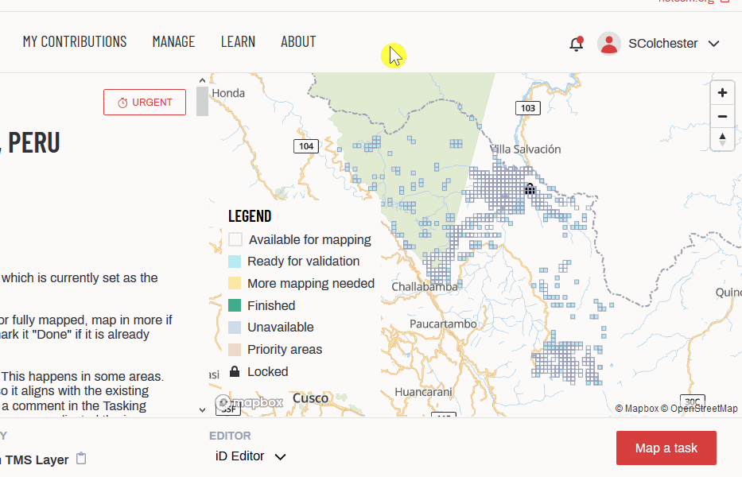
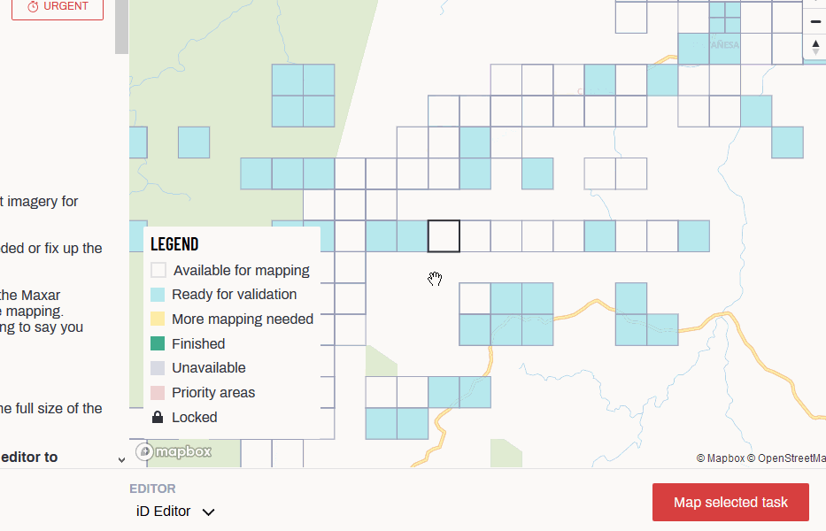

3.3 Working with the HOT Tasking Manager
Overview
The HOT Tasking Manager is a mapping tool designed and built for the Humanitarian OpenStreetMap Team’s collaborative mapping process in OpenStreetMap. The purpose of the tool is to divide up a mapping project into smaller tasks that can be completed rapidly with many people working on the same overall area. It shows which areas need to be mapped and which areas need the mapping validated.
For information on Managing and Creating Projects on the HOT Tasking Manager, fill out a form here, http://bit.ly/TaskManagers, to receive training and permissions to become a TM Project Manager.

Skills and Technology Needed
- Computer
- Internet connection
- OSM account
Resources
- OSM Tasking Manager Wiki
- Learn How to Use the Tasking Manager
- Two Minute Tutorials: How to use the OSM Tasking Manager
HOT Training Materials
Introduction to HOT Tasking Manager [1]
Getting Started
Head to the HOT Tasking Manager website: https://tasks.hotosm.org/. To sign in, click on the ‘login’ button in the top right corner of the page. Once you click on the login button a new page will open on the OpenStreetMap website with a login form. Please enter your OSM username and password.

If this is the first time you are logging into Tasking Manager with your OSM username and password from the device you are using, an authorisation message will appear. Click ‘Grant Access’ so that your OSM login details will sync to the Tasking Manager. Navigate back to the Tasking Manager page and click on the ‘Start Mapping’ button. You will notice that your username now displays in the upper right hand corner of the page.
Finding a Project
The ‘Start Mapping’ button on the landing page, or the ‘Contribe’ button at the top, will take you to the Contribute page of the HOT Tasking Manager. This page will display a list of current mapping projects. The Grid View will display tasks as shown below:

Each task listed will describe:
- The urgency of the task
- The task number and project name - this will often include the location of the task, the type of humanitarian response, and the focus feature being mapped
- Any important information e.g. type of mapper needed / experience level
- A description of the task
- The organization requesting the task
- The category of the task
- The level of experience a mapper needs to contribute
- The percentage of the task mapped so far
- The percentage of the task validated so far
- The current number of active users
If you have a specific task to contribute to, you can search for it in the sidebar to the left of your screen. You can search by:
- Project name or number
- Level of mapping difficulty
- Organization
- Campaign
- Type of mapping (features being mapped)
You can also view the list of projects in Map view. You can switch between Grid view and Map view by clicking on each option. The view you are currently in will display as underlined. If you select Map view, the list of tasks will display on a map of the world. Projects are clustered together into circles which display the number of projects in that particular area.
You can zoom into an area to view a smaller breakdown of projects in a particular region.
Selecting a Project
Once you have decided which task you want to map, you can click on the task to open the project page. The task page will provide specific details on the task objective and requirements.

Underneath the project description you will find instructions for the task. The instructions explain which entities to map (which features e.g. buildings, roads) and provides project specific guidelines (mapping notes) to follow. The Project Specific Mapping Notes section gives detailed instructions on the imagery to use, how to trace specific features, and how to tag features.
Mapping features which are the focus point of the task are explained in further detail underneath the Project Specific Mapping Needs. For example, if the type of mapping of a project is buildings and roads, the following instructions might appear:
These feature specifications will describe common tags used for each main feature and provide tips for mapping that feature.
The map on the right-hand side of the task you have selected is split into squares which are colour coded dependent on the completion of the mapping in that square. The colours represent the following:
- White: a tile is ‘Ready’ to be mapped and needs to be completed
- Yellow: a tile has been ‘Mapped’
- Grey: a tile has ‘Bad Imagery’
- Green: a tile has been ‘Validated’. This means that the mapping in this area has been quality checked, edited if necessary, and approved. Validators will leave comments next to a tile to show the changes they have made
- Red: a tile has been ‘Invalidated’. This could be because an area was not fully mapped or multiple errors need to be corrected
- Blue: a tile is ‘Locked’ by another user
- Blue with dark blue outline - a tile is ‘Locked by You’. You are currently mapping this tile.
Click on a white tile to begin mapping an area that is in need of mapping. When you click on a white tile the outline of the square will be highlighted in yellow and two options will appear ‘Start Mapping’ and ‘Select Another Task’.

If you click, ‘Select Another Task’, the map will zoom in to an alternative task which needs mapping. You may notice that some tasks have comments next to them under the History section. The History section will display comments that have been left by other users e.g. if a task has been started but still needs someone to complete. It will also show when the tile was last locked for mapping by another user.
When you have selected the tile that you want to map, click ‘Start Mapping’. You then need to select the type of editor you will be using. Select ‘JOSM’ or ‘iD Editor’ from the dropdown list and then click ‘Start Editor’.

Next: Editing with iD and JOSM editors